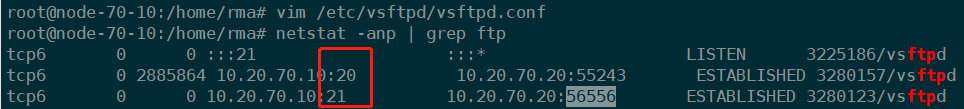
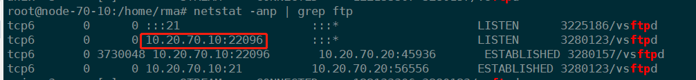

安装
在linux环境下，使用最多的FTP服务端软件就是Vsftpd！安装Vsftpd，运行一下命令需要在root用户下进行！
1 | # centos |
启动服务
1 | service vsftpd start |
重启服务使用restart
FTP传输模式
主动模式：客户端以随机端口（>1024）监听数据连接服务，vsftpd以20端口主动与客户端建立数据连接
主动模式对客户端的网络有要求，需要服务端能够连接上客户端

被动模式：服务端以随机端口（>1024）监听数据连接服务，客户端与vsftpd建立数据连接

配置文件
/etc/vsftpd/vsftpd.conf这个文件是vsftpd服务的核心配置文件！
1 | # 是否允许匿名登录FTP服务器，默认设置为YES允许 |
/etc/vsftpd/ftpusers这个文件是禁止使用vsftpd的用户列表文件。记录不允许访问FTP服务器的用户名单，管理员可以把一些对系统安全有威胁的用户账号记录在此文件中，以免用户从FTP登录后获得大于上传下载操作的权利，而对系统造成损坏。
/etc/vsftpd/user_list这个文件禁止或允许使用vsftpd的用户列表文件。这个文件中指定的用户缺省情况（即在/etc/vsftpd/vsftpd.conf中设置userlist_deny=YES）下也不能访问FTP服务器，在设置了userlist_deny=NO时,仅允许user_list中指定的用户访问FTP服务器。